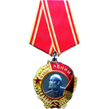
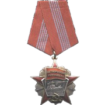
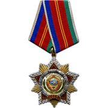
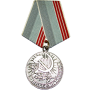
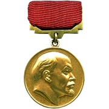
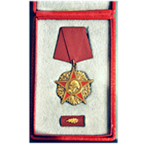
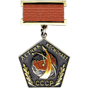

VALENTINA TERESHKOVA
Primera mujer en ir al espacio (1963)

VALENTINA TERESHKOVA
Primera mujer en ir al espacio (1963)
-
Marzo 6 de 1937 Yaroslavl, Rusia
Nace Valentina Tereshkova -
Junio 16 de 1963 URSS
Valentina viaja al espacio a bordo del Vostok 6 -
1969 URSS
Se consagra en el partido comunista de la URSS.
Valentina Vladímirovna Tereshkova (en ruso, Валенти́на Влади́мировна Терешко́ва; Máslennikovo, Yaroslavl, 6 de marzo de 1937) es una cosmonauta y política rusa ya retirada. Ingeniera, que como cosmonauta se convirtió en la primera mujer, y a la vez la primera civil que voló al espacio, habiendo sido seleccionada entre más de cuatrocientos aspirantes y cinco finalistas para ser piloto del Vostok 6, lanzado el 16 de junio de 1963. Completó 48 órbitas alrededor de la Tierra en sus tres días en el espacio. Para unirse al Cuerpo de Cosmonautas, Tereshkova fue incorporada de manera honoraria a la Fuerza Área Soviética, siendo así la primera civil en volar al espacio.
Antes de su reclutamiento como cosmonauta, Tereshkova fue una obrera que trabajaba en una fábrica textil y paracaidista aficionada. Después de la disolución del primer grupo de cosmonautas femeninos en 1969, fue un prominente miembro del Partido Comunista de la Unión Soviética, participando en varias oficinas políticas. Permaneció activa en la política tras el colapso de la Unión Soviética (URSS) y es considerada como una heroína en la Rusia post-soviética.
- Piloto
- Ingeniera
- Cosmonauta
- Paracaidista militar
Después del exitoso lanzamiento del Vostok 5 el 14 de junio, Tereshkova comenzó los preparativos finales para su propio vuelo. Ella tenía 26 años en ese momento. En la mañana del 16 de junio de 1963, Tereshkova y Soloviova fueron vestidos con los trajes espaciales correspondientes y llevados a la plataforma de lanzamiento en autobús. Después de completar sus comunicaciones y chequeo de soporte vital, se la selló dentro de la Vostok. Después de una cuenta de dos horas, el Vostok 6 fue puesto en marcha sin errores, y Tereshkova se convirtió en la primera mujer en llegar al espacio. Su señal de llamada en este vuelo era Chaika (Gaviota, ruso: Чайка), más tarde conmemorado como el nombre de un asteroide, 1671 Chaika.
Aunque Tereshkova experimentó náuseas y malestar físico durante gran parte del vuelo, dolor en el cuello por lo pesado del casco orbitó la Tierra 48 veces y estuvo casi tres días en el espacio. Con un solo vuelo, registró más tiempo de vuelo que la suma de todos los tiempos de todos los astronautas estadounidenses que habían volado antes de esa fecha. Tereshkova también mantuvo un registro de vuelo y tomó fotografías del horizonte, que serían utilizadas para identificar las capas de aerosol de la atmósfera.
-
Héroe de la Unión de repúblicas soviéticas socialistas -
 Orden de Lennin (x2) -
 Orden de la revolución de octubre -
Orden de la bandera roja del trabajo -
 Orden de la amistad de los pueblos -
 Medalla al trabajador veterano -
 Premio Lennin -
Maestro honorario en deportes de la URSS -
 Orden de Karl Marx (RDA) -
Orden del sol del Perú -
Condecoración Bernardo O'Higgins -
 Piloto Cosmonauta de la URSS